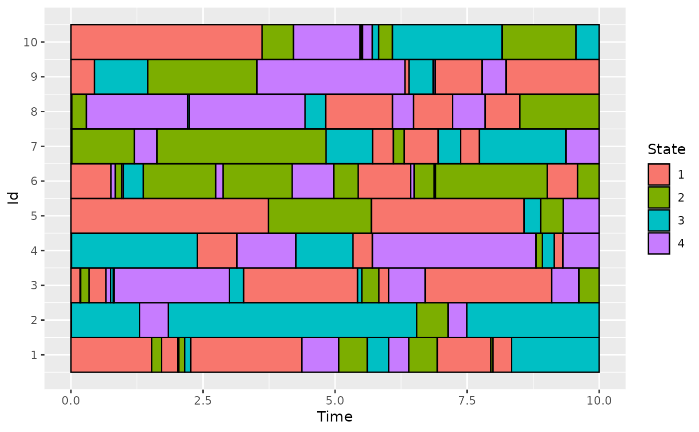
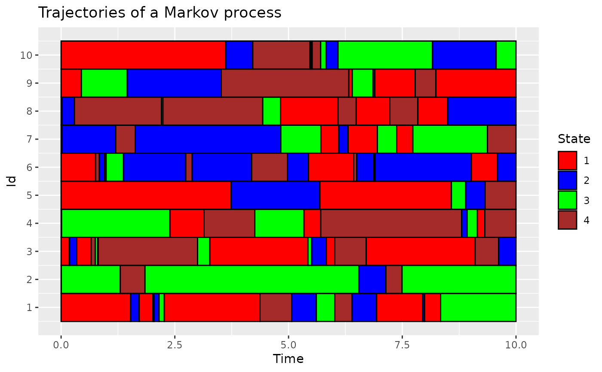
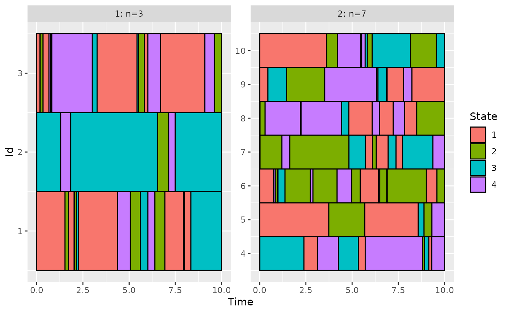
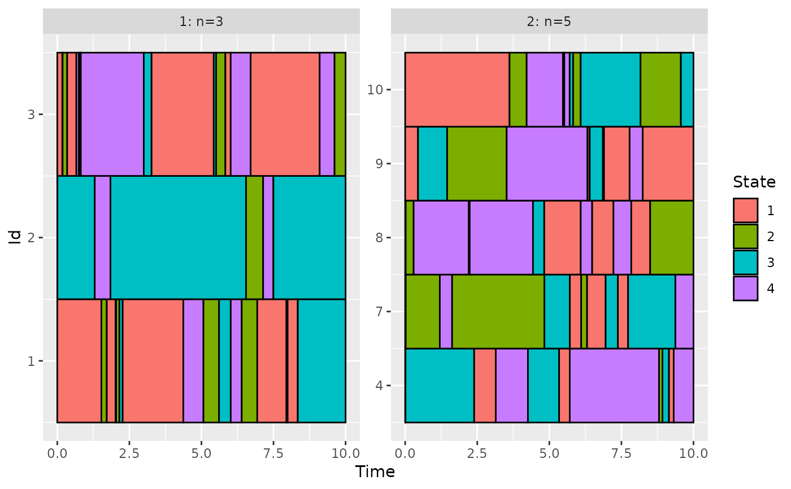

Plot categorical functional data
plotData(
data,
group = NULL,
col = NULL,
addId = TRUE,
addBorder = TRUE,
sort = FALSE,
nCol = NULL
)data.frame containing id, id of the trajectory, time, time at which a change occurs and
state, associated state.
vector, of the same length as the number individuals of data, containing group index.
Groups are displayed on separate plots.
If group = NA, the corresponding individuals in data is ignored.
a vector containing color for each state (can be named)
If TRUE, add id labels
If TRUE, add black border to each individual
If TRUE, id are sorted according to the duration in their first state
number of columns when group is given
a ggplot object that can be modified using ggplot2 package.
On the plot, each row represents an individual over [0:Tmax].
The color at a given time gives the state of the individual.
Other Descriptive statistics:
boxplot.timeSpent(),
compute_duration(),
compute_number_jumps(),
compute_time_spent(),
estimate_pt(),
hist.duration(),
hist.njump(),
plot.pt(),
statetable(),
summary_cfd()
# Simulate the Jukes-Cantor model of nucleotide replacement
K <- 4
PJK <- matrix(1 / 3, nrow = K, ncol = K) - diag(rep(1 / 3, K))
lambda_PJK <- c(1, 1, 1, 1)
d_JK <- generate_Markov(n = 10, K = K, P = PJK, lambda = lambda_PJK, Tmax = 10)
# add a line with time Tmax at the end of each individual
d_JKT <- cut_data(d_JK, Tmax = 10)
plotData(d_JKT)

# modify the plot using ggplot2
library(ggplot2)
plotData(d_JKT, col = c("red", "blue", "green", "brown")) +
labs(title = "Trajectories of a Markov process")

# use the group variable: create a group with the 3 first variables and one with the others
group <- rep(1:2, c(3, 7))
plotData(d_JKT, group = group)

# use the group variable: remove the id number 5 and 6
group[c(5, 6)] <- NA
plotData(d_JKT, group = group)
